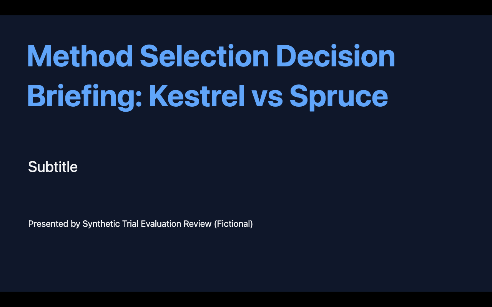

经验驱动更新：固定训练准入未通过
按模型前冻结的规则，本候选路线止于经验采集准入：没有调用反思更新器，没有生成新候选知识，没有启动原题开发或两批验证，没有追加样本。原 benchmark 的双重改善 Goal 仍未完成。
失败证据 → 文献源码 → 新机制 → 执行验证
上一轮逐页程序在原生工具上40次调用通过，但原457四次 SP／候选执行均没有真正调用 set_page 或 add_page，正常完成与实际产物均未改善。这个差距把本轮问题定位为：怎样从实际 agent 的成功与失败经验学习可采用的知识，而不是再证明一次工具程序能工作。有边界复盘及候选比较复用已有五类失败矩阵，没有读取全历史或全量旧轨迹。
| 失败类别 | 直接证据／观察 | 尚未证明的解释 |
|---|---|---|
| 知识适应 | 原生程序可执行；agent 未采用正文写入。旧路由修正曾减少错误调用。 | 真实产物结果对比可能比纯接口说明更能约束有效知识。 |
| 执行与预算 | 已有截断字段明确；减少工具调用或提高 PE 未转化为完成。 | 正文重新推导与设计消耗可能是瓶颈；尚无因果对照证明。 |
| 产物生成 | 缺失文稿、错误统计解读；weather_provenance 曾改善 core，但完成率已为满值，未实现双提升。 | 经验入库需核验实际产物，不能只相信高 TF。 |
| 环境／数据 | 377原始输入缺失、当前不可评估，查找路线已关闭；457输入和共同运行环境已有证据。 | 环境排除不能被当作策略失败。 |
| 评测不确定性 | 235同K0仍可能出现不同事实错误；TF10曾漏检。 | 独立重复和产物检查可降低部分不确定性，不能消除小样本限制。 |
借鉴的机制与没有复现的部分
GEPA，2507.19457v2（2026-02-14）用执行反馈反思并修改候选组件，再通过执行检验。官方仓库固定为 8c7b697a…；关键位置为 reflective_mutation.py:136/281/476/628/682、candidate_selector.py:12 和 mcp_adapter.py:189/463/596。本轮只借鉴反馈驱动的局部替换，不声称实现迭代搜索、Pareto 选择或候选合并。
官方 MCP 适配器的两次调用执行流程，以及反思数据中包含的问题和最终输出，均与这里的固定执行协议和输入隔离不兼容，因此未直接接入。ExpeL，2308.10144v3（2024-12-20）提供经验对比与规则更新依据；作者源码固定 e41ec9a…，重点 agent/expel.py:124/665/696。既有版本没有从实际正确／失败的通用 agent 经验学习此次局部替换；本轮也没有实现完整 ExpeL 的规则信用和检索循环。
另比较了多候选记忆选择和信用累计规则整合：前者需要改变当前执行／选择边界，后者同样缺合格的 actor 正反经验。选中方案先用四次固定样本检验这个前提。源码版本、哈希与许可均保留。
冻结方案与两条任务路线
原题路线固定为457 Middle／Late，加235 Late保持任务；457三份原PDF、原生工具和共同渲染环境均复用已有准入，原SP为并行直接对照。没有依据本轮分数挑选题目。MagicUI已有不完整输入筛查保留，未重新寻找377日志。
合成路线使用独立编号900201／900202，种子800201／800202，各两次SP执行，顺序固定为201、202、202、201。完整源事实嵌入题目；任务要求四页六分钟暗色简报、审计数据溯源、成功率与月费用计算、延迟／预算双约束决策、局限和下一步。不同任务的最优选项不同。其难度和篇幅不能等同原457；这些运行仅用于适应训练，不构成原题改善证据。
数据生成、正确答案、文件哈希、七项产物属性与停止规则在 protocol.json 冻结。答案只供评测，不进入 agent／更新器。四次均使用原SP，知识差异为零；学习算法先冻结，若能学习出候选，精确知识还必须在新开发试验前单独冻结。模型前提交 72ba610。
条件机制为：至少一个“正常完成且 core 全通过”正例与一个失败经验 → 一次受限反思 → 在指定工作流闭包中替换1–3项 description（总计≤6000字符）→ 证据与实质新颖性审查 → 六单元原题开发。只是移动／改写旧顺序提示、预算提示或错误回避提示不得晋级。开发与每一批独立验证均须完成和 core 严格优于SP，TF及235保持不下降；开发不通过则不运行18+18验证。
模型、DigitalOcean供应商、temperature0、4096输出token、12轮及超时均沿用；五次首个有效官方评分协议不变。使用独立费用账本。No Update／Full Rewrite沿用课程历史证据，未混入本轮训练汇总。
四次执行的实际结果
| 执行 | 合成ID | 完成状态 | core | TF | PE | 响应轮数 | 工具调用 |
|---|---|---|---|---|---|---|---|
| E01 | 900201 | 截断 | 否 | 1.2 | 6.6 | 5 | 5 |
| E02 | 900202 | 截断 | 否 | 1.2 | 6.4 | 5 | 5 |
| E03 | 900202 | 截断 | 否 | 1.0 | 7.8 | 5 | 5 |
| E04 | 900201 | 截断 | 否 | 2.0 | 6.2 | 6 | 7 |
正常完成0/4；实际质量全通过0/4；平均TF1.35，PE6.75；ECS=null。没有本轮原题或235保持运行，所以不能声称保持能力得到新的验证。所有失败和原始评分保留。独立复算明细。
四个实际文件均只有一个含“Subtitle”占位符的封面；所有正文 set_page／add_page 实际调用数为零。E01、E02、E04返回了截断的调用文本，未被执行；E03最终内容为空。未执行文本中即使出现正确算术，也不能算作保存的产物。三个封面实际渲染并保持原字节，E02选择了未安装的 midnight-brief 主题，渲染退出1，未补装依赖或修复文稿。封面的局部视觉通过不代表完整简报通过。

最后响应的prompt为7626–11610 token，reasoning为3242–4096 token，completion均4096并以length结束。相较过去的大返回案例，这说明本组失败并不需要五万以上的上下文；仍不能据此证明某一种设计行为造成截断。定向停止证据。
22个工具调用的外层isError均false，但E03首次load_slidev内部success=false。内部结果审计单列；冻结投影的native_is_error只代表外层标志，不能当作业务成功。此投影未发送更新器；未来若复用必须另行冻结对内部结果的处理。初始化日志中的JSONRPC解析警告也完整保留，不把它解释为四次截断的已证实原因。
验收、复现与费用
产物审查在提交 117f654 冻结后才揭示TF／PE；由同一协调者完成，不声称独立人工复核或方法盲审（四例都是SP）。实际属性缺失保持fail／unknown，不以官方分数补判通过。全部属性审查、可执行门槛结果、揭示顺序记录。
共43次请求：21 agent、20 judge、2 preflight；全部固定模型／供应商，未知费用0。实际总费 USD0.032424492；更新器调用、token、费用均0。174份原始文件、63份冻结输入／源码及原始错误日志均归档。10项反馈边界测试含先红后绿记录；全量离线测试467通过，15项integration未重复运行。
离线复算：python3 results/evidence/experience-gated-learning-20261101/verify_training.py。它独立核对归档哈希、固定顺序、SP知识、运行配置、20个首有效评分、供应商、响应ID与费用；不会调用模型或网络。属性语义审查的局限仍保留。
当前边界
本轮建立并检验了“实际经验→反思更新”所需的数据准入，结果是缺少合格正例，学习候选尚未形成。不把训练准入失败写成候选知识效果失败，也不泛化为GEPA、ExpeL或全部工作流方法无效。即使下一次合成实验成功，也不能替代原benchmark的严格双提升证据。
此确切采集方案已关闭，不重跑直到出现成功、不把新提示当作已学习的新机制。当前没有可晋级候选；后续设计必须提出不同且有依据的机制，并维持现有公平条件。这是具体证据缺口，不是宣称整个方法空间已穷尽。Goal继续未完成；没有推送、部署或外发。